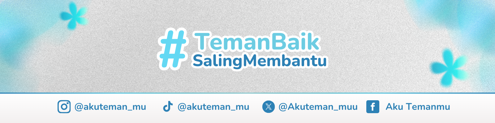

#
TemanBaik
SalingMembantu

Portal Absensi Relawan
Silakan pilih formulir absensi sesuai dengan kegiatan Kamu hari ini.
Absensi Kegiatan/Event Offline
Absensi Kunjungan Rumah Konseling
Absensi Kegiatan/Event Online